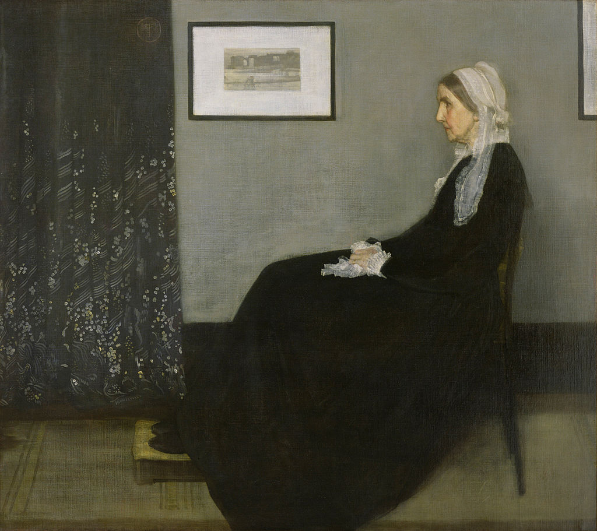

<head>
<meta charset="UTF-8" />
<meta name="keywords" content="drawing, painting" />
<meta name="description" content="drawings by Sunjy" />
<title>Sunjy</title>
<link rel="shortcut icon" type="image/x-icon" href="../../mImages/mCommon/favicon.ico" media="screen" />
<link rel="stylesheet" type="text/css" href="../../mCsses/mCommon/mCssA.css" />
<link rel="stylesheet" type="text/css" href="../../mCsses/mCommon/mCssB.css" />
<link rel="stylesheet" type="text/css" href="../../mCsses/mCommon/mCssC.css" />
<link rel="stylesheet" type="text/css" href="../../mCsses/mCommon/mCssD.css" />
<link rel="stylesheet" type="text/css" href="../../mCsses/mContent/mCssA.css" />
<link rel="stylesheet" type="text/css" href="../../mCsses/mContent/mCssB.css" />
<link rel="stylesheet" type="text/css" href="../../mCsses/mContent/mCssC.css" />
<link rel="stylesheet" type="text/css" href="../../mCsses/mContent/mCssD.css" />
</head>
<script type="text/javascript" src="../../mScripts/mContent/mContentAA.js" /></script>
<script type="text/javascript" src="../../mScripts/mContent/mContentAB.js" /></script>
<script type="text/javascript" src="../../mScripts/mContent/mContentAC.js" /></script>
<script type="text/javascript" src="../../mScripts/mContent/mContentAD.js" /></script>
<script type="text/javascript"></script> 
<script type="text/javascript">
document.write('<div class="mImgAbsolute"></div>');
/*
document.write('<p class="mFontSizeBColor" />From a white paper...</p>');
document.write('<table class="center"><tr><td>');
document.write('');
document.write('</td></tr></table>');
*/
</script>


<script type="text/javascript">
document.write('<p class="mFontSizeBColor" />Whistler’s Mother</p>');
document.write('<p class="mFontSizeSColor" />By James McNeill Whistler. “Whistler’s Mother” depicts the painter’s mother, Anna McNeill Whistler. Its title is “Arrangement in Grey and Black No.1” but is best known by its colloquial name “Whistler’s Mother.”<br><br> It is one of the most famous works by an American artist. The painting has been featured in posters and stamps. It has also been referenced in many works of fiction and within pop culture.<br><br>An example is a Canadian War recruitment poster that urges men to enlist with the Irish Canadian Rangers and to fight for the women in their own lives.<br><br>Based on Whistler’s painting of his mother, it appeals to notions of motherhood and family values that were popular at the time and often attributed to this picture.</p>');
document.write('<table class="center" /><tr><td>');
document.write('<br> It is one of the most famous works by an American artist. The painting has been featured in posters and stamps. It has also been referenced in many works of fiction and within pop culture.<br><br>An example is a Canadian War recruitment poster that urges men to enlist with the Irish Canadian Rangers and to fight for the women in their own lives.<br><br>Based on Whistler’s painting of his mother, it appeals to notions of motherhood and family values that were popular at the time and often attributed to this picture." />');
document.write('</td></tr></table>');
</script>


